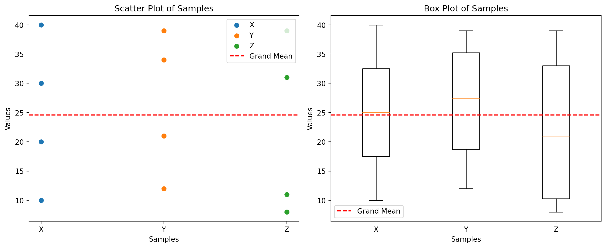

import numpy as np
import matplotlib.pyplot as plt
# Data
X = np.array([10, 20, 30, 40])
Y = np.array([12, 21, 34, 39])
Z = np.array([8, 11, 31, 39])
# Grand mean
grand_mean = np.mean(np.concatenate([X, Y, Z]))
# Scatter plot
plt.figure(figsize=(12, 5))
plt.subplot(1, 2, 1)
plt.scatter(np.ones_like(X), X, label='X')
plt.scatter(np.ones_like(Y) * 2, Y, label='Y')
plt.scatter(np.ones_like(Z) * 3, Z, label='Z')
plt.xticks([1, 2, 3], ['X', 'Y', 'Z'])
plt.xlabel('Samples')
plt.ylabel('Values')
plt.title('Scatter Plot of Samples')
plt.axhline(grand_mean, color='red', linestyle='--', label='Grand Mean')
plt.legend()
# Box plot
plt.subplot(1, 2, 2)
plt.boxplot([X, Y, Z], labels=['X', 'Y', 'Z'])
plt.xlabel('Samples')
plt.ylabel('Values')
plt.title('Box Plot of Samples')
plt.axhline(grand_mean, color='red', linestyle='--', label='Grand Mean')
plt.legend()
plt.tight_layout()
plt.show()